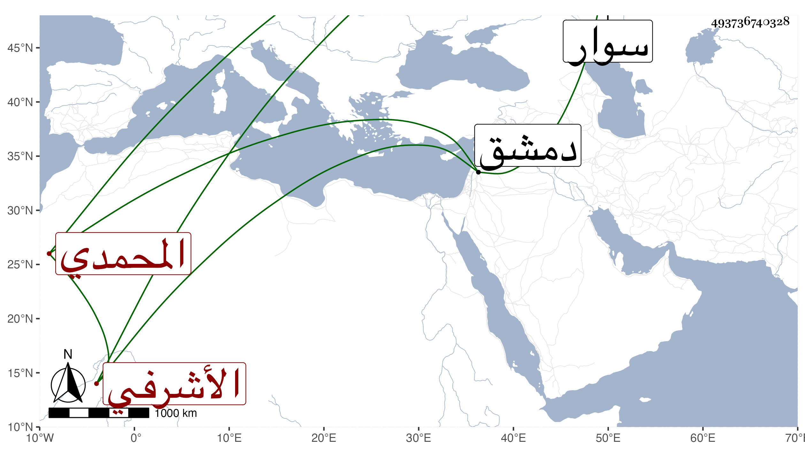

0902Sakhawi.DawLamic.ITO20230111-ara1.EIS1600.493736740328
Biography ID: 493736740328
685
قانصوه المحمدي الأشرفي برسباي . كان من خاصكيته ثم من سقاته وامتحن بعده بالحبس وغيره إلى أن أمره المنصور عشرة ثم أخرجه الظاهر خشقدم لدمشق على تقدمة فيها لحقده عليه واستمر إلى أن خرج لسوار فمرض بالبلاد الحلبية أياما . ثم مات في صفر سنة اثنتين وسبعين وهو في عشر الستين وكان حسن الشكالة كثير الأدب عاقلا ساكنا شجاعا دينا عفيفا نادرة في أبناء جنسه .
